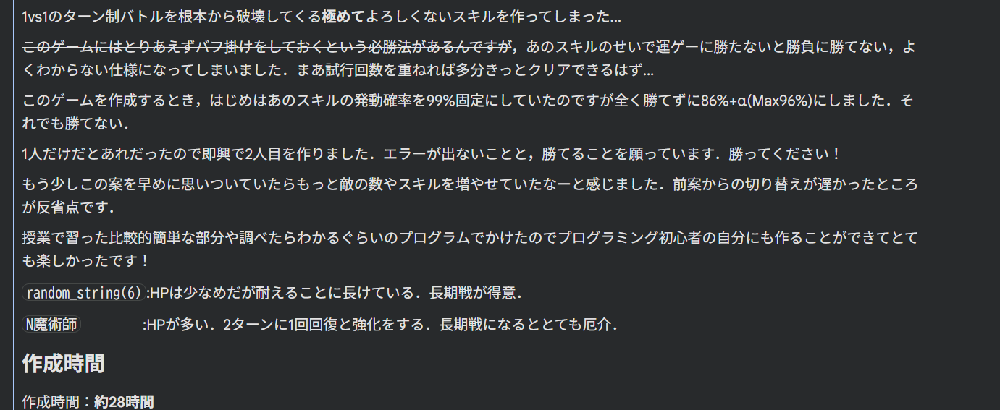
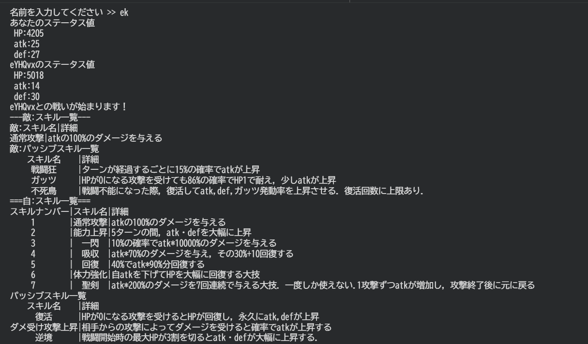
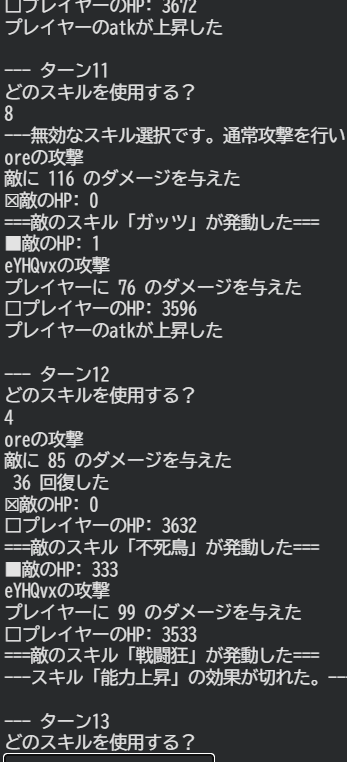

ターン制ゲーム




概要
プログラミングの授業で作成した課題です。プレイヤーとコンピュータが交互に行動して戦う、コマンド選択式のゲームです。
- 勝敗条件: プレイヤーまたは相手のHPが0
- 作品URL:https://colab.research.google.com/drive/1zK0muYMqjtTlNnqvRctzrZ4r4zy4ecHd?usp=sharing
使用技術
- 使用技術: python
- 制作期間: 28時間
工夫した点
攻撃・防御・回復など複数のコマンドを用意し、戦略性を持たせました。
乱数を使いダメージや回復量などにばらつきを持たせ、毎回展開が変わるようにしました。
苦労した点
エラーが出た時、それを解決するためにコードをずっと見ていたため、とても時間がかかった。